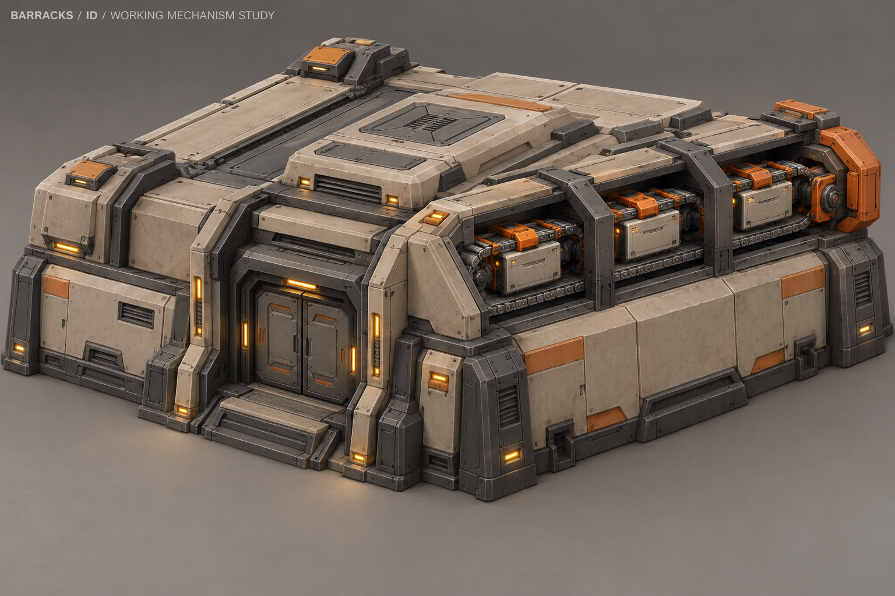
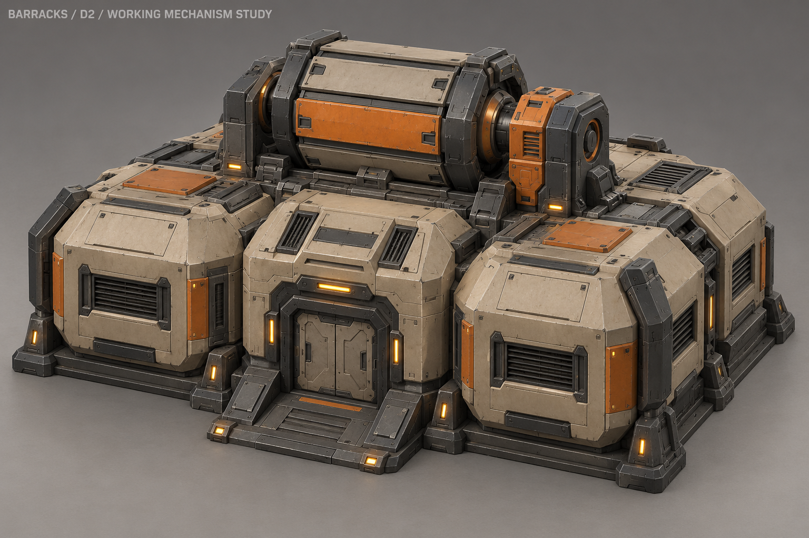
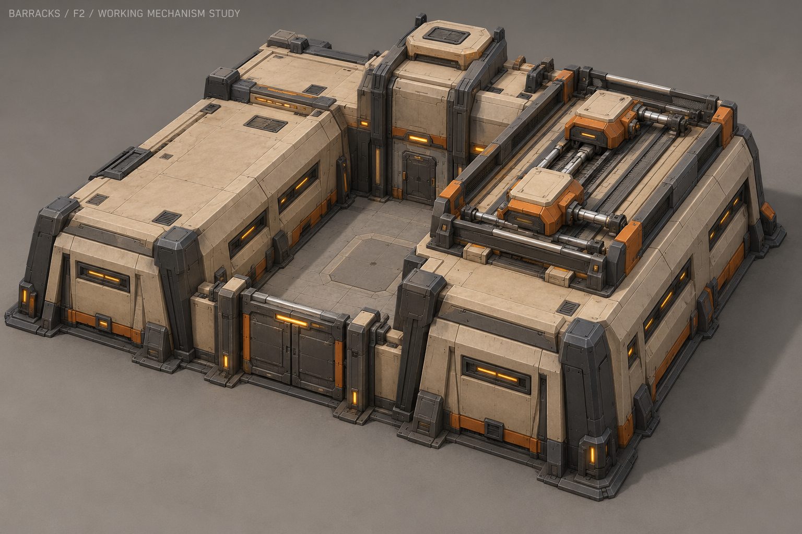

A2 «Выдача снаряжения»

Кассеты выдачи снаряжения проходят вдоль бокового блока; корпус и защитные рёбра неподвижны.
Схема движения — не анимация игрового ассета:
D2 «Учебный барабан»

Гранёный барабан вращается в опорах; оранжевая грань делает движение заметным с игровой камеры.
Схема движения — не анимация игрового ассета:
F2 «Экипировочный модуль» · ВЫБРАН

Две каретки на крыше ходят по направляющим, их приводы работают поочерёдно.
Схема движения — не анимация игрового ассета: